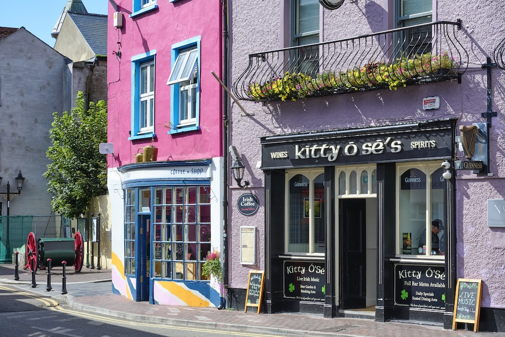

Kinsale · Co. Cork
Bar & restaurant.
Lunch and dinner served daily, with regular live Irish music.

Food
Lunch & dinner.
Irish bar food and daily specials. Food served from 12 noon until 9pm.
View the demo menu →

Music
Live Irish music.
Check the Facebook page for the latest music nights and updates.
Updates on Facebook ↗